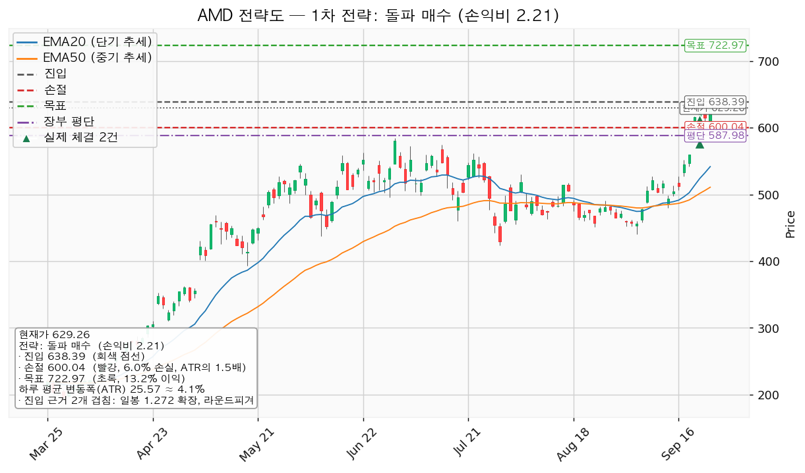
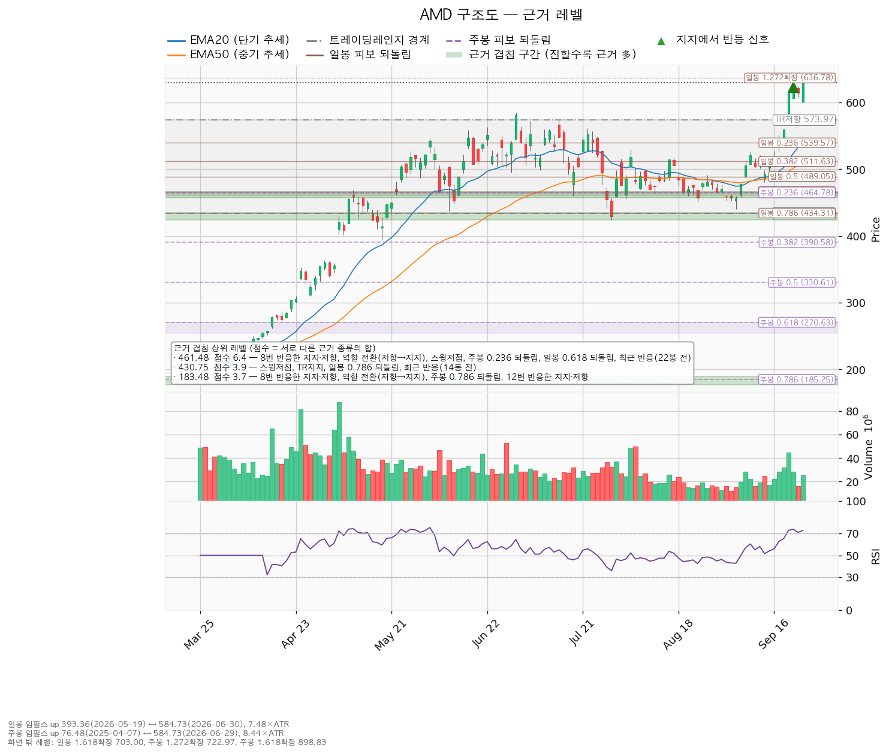
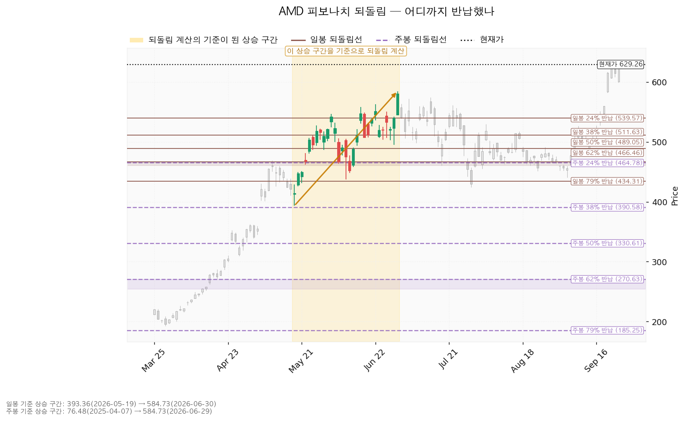
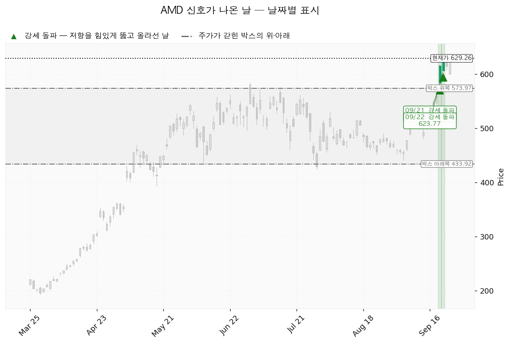

AMD(Advanced Micro Devices)는 PC·서버용 CPU와 데이터센터 GPU, 게임기용 반도체를 설계하는 미국 기업입니다.
미국장은 신규 진입이 가능한 국면입니다 — S&P 500 7,704가 200일 이동평균 7,196 위(+7.06%)이며 2026-04-08부터 그렇습니다.
| 구분 | 가격 | 판정 방식 | 현재 상태 |
|---|---|---|---|
| 회복선 | 461달러 (-26.66%) | 일봉 종가 회복 후 되돌림 지지 | 회복 완료. 8번 반응한 지지·저항 + 역할 전환(저항→지지) + 스윙저점 + 주봉 0.236 되돌림 + 일봉 0.618 되돌림이 겹칩니다 |
| 집행 손절 | 524달러 (-16.77%) | 저가 터치 | 보유 3주에만 유효 |
| 관망 종료 기준 | 570달러 (-9.44%) | 일봉 종가 이탈 | 유지 중 — 이탈하면 이 리포트의 매수 계획이 끝나고 새 리포트를 기다립니다. 보유분은 그대로 두고 524달러 손절만 남습니다 |
| 확인선 | 513달러 (-18.43%) | 일봉 종가 돌파 후 되돌림 지지 | 돌파 완료. 박스 상단 574달러는 그 위 맥락입니다 |
| 폐기선 | 434달러 (-31.04%) | 이탈 후 3거래일 내 종가 회복 실패 + 반등에서 저항 확인 | 유지 중. 현재가에서 하루 평균 변동폭의 7.64배 아래라 실무상 무효화 기준으로 작동하지 않습니다 |
대표 셋업이 돌파형이므로 거래량은 실려 있어야 정상이며, 최근 5일 평균이 20일 평균의 1.36배로 그 조건을 채웁니다. 지수 대비 초과수익은 20일 +30.97% · 60일 +13.10% · 120일 +182.18%이고, 가중치(20일 0.45 · 60일 0.30 · 120일 0.25)를 적용하면 +63.41%입니다.
직전이 건 여섯 가격 중 새로 충족된 것은 없습니다 — 2026-09-24 고가 630.79달러가 목표 638.39달러에 -1.43% 못 미쳤고, 저가 599.35달러로 손절 523.85달러 위, 종가 629.26달러로 관망 종료 기준 576.06달러 위에서 마감했습니다. 회복선·확인선이 다시 잡힌 것은 이미 충족돼 있던 값이며 새 사건이 아닙니다. 장부는 보유 2주(평단 576.08달러)에서 3주(평단 587.98달러)로 바뀌었습니다 — 2026-09-22 체결 1주가 직전 리포트 발행 뒤에 기록됐습니다.
좌표는 관망 종료 기준 576.06 → 569.88달러(겹침 구간이 561.47~574.20달러로 다시 잡힘), 확인선 511.63 → 513.27달러(EMA50이 505.92 → 510.85달러로 올라옴), 집행 손절 523.85 → 523.74달러로 움직였고 회복선 461.48달러·목표 638.39달러·폐기선 433.92달러는 같습니다. 하루 평균 변동폭은 25.1161 → 25.5681달러입니다.
판단은 바뀌었습니다. 직전에는 돌파 셋업의 손익비가 1:1.20이고 진입가가 보유분 매도 가격과 같아 집행 구간이 없다고 봤는데, 이번에는 손익비가 1:2.21로 올라 돌파 매수를 집행 계획으로 냅니다. 올라간 이유는 구조가 나아져서가 아니라 손절이 567.69달러(겹침 구간 아래)에서 600.04달러(진입에서 1.5 ATR 아래)로 좁혀졌기 때문이며, 진입 638.39달러와 목표 722.97달러는 직전과 같은 값입니다.
| 항목 | 내용 |
|---|---|
| 이름 | 돌파 매수 (breakout_long) — 엔진이 고른 대표 셋업 |
| 진입 | 638달러 일봉 종가 돌파 시 (+1.45%, 0.36 ATR 위). 장부 평단 587.98달러 위이므로 물타기가 아니라 추가 매수 자리입니다 |
| 진입 근거 겹침 | 두 근거 — 일봉 1.272 확장 636.78달러 + 라운드피겨 640.00달러 (636.78~640.00달러) |
| 구조 증명도 | 돌파 확인형 (가중치 1.0) — 저항을 종가로 넘긴 뒤 들어가므로 진입가는 불리하나 구조가 먼저 증명됩니다 |
| 손절 | 600달러 / 근거: 진입 아래 가까운 겹침 구간이 없어 진입 기준선에서 하루 평균 변동폭의 1.5배 아래에 두었습니다 |
| 목표 | 723달러 (주봉 1.272 확장). 단일 목표 전량 매도이며 트레일링은 걸지 않습니다 |
| 손익비 | 1:2.21 (손절 폭 1.5 ATR). 분할하면 전 구간이 1:1.39로, 본전 스탑 하한은 1:0.28로 내려갑니다 |
| 엣지 | 모멘텀 — 저항을 돌파하면 그 방향이 이어진다는 전제. 자주 틀리고 소수가 크게 맞는 유형(이 유형의 일반적 성격이며 이 엔진에서 측정한 값이 아닙니다) |
| 비중 | 산출값은 계좌의 16.6%이나 13% 상한(18,134,792원)을 적용해 20주·17,439,666원(계좌의 12.5%) |
대표로 고른 이유는 손익비 2.21 × 구조 증명도(돌파 확인형) × 진입 근거 두 개이며, 상대강도·거래량이 순위에 1.2배를 곱했습니다(지수 대비 20일 초과수익 +30.97%, 상대강도선 60일 신고가, 돌파 구간 거래량 최대 2.06배). 눌림 후보는 손익비 1:1.48에 구조 증명도가 선취형(가중치 0.7)이어서 순위가 0.89 대 2.002로 밀렸습니다. 진입 근거는 모멘텀이지만 집행은 구조적 손절과 목표 전량 매도를 따릅니다.
현재가 추격은 권하지 않습니다 — 현재가 629.26달러가 저항에 붙어 있기 때문이며, 엔진이 제시한 대기 좌표는 569.88달러 되돌림(스윙고점 + 박스 상단 저항)입니다. 5봉 뒤 이동평균 투영치는 EMA20 541.73 → 576.19달러, EMA50 510.85 → 532.31달러이고, 이는 현재가 629.26달러가 그대로 유지될 경우의 이평선 위치이지 가격 예측이 아닙니다. 569.88달러는 되돌림이 그 부근에서 멈출 때의 대기 좌표이고, 일봉 종가가 그 아래로 마감하면 위 표의 관망 종료 기준이 되어 이 리포트의 매수 계획이 끝납니다.
보유 3주(평단 587.98달러, 평가 +7.02% · +169,163원)는 638달러 장중 터치에서 전량 매도 (목표 도달)합니다. 평단 기준 남은 이익은 +50.41달러, 524달러 손절까지의 손실은 -64.24달러로 이 3주의 잔여 손익비는 1:0.78입니다. 638달러는 이 3주의 매도 가격이면서 돌파 매수의 진입 기준선이므로, 장중 터치로 3주를 매도한 뒤 그날 종가가 638달러 위로 마감하면 20주를 손절 600달러로 새로 집행합니다.

보유 3주와 돌파 매수 전제를 함께 지탱하는 569.88달러 기준입니다.
| 단계 | 트리거 | 의미 | 행동 |
|---|---|---|---|
| 1 관찰 | 일봉 종가가 570달러 아래로 마감 | 구조 이탈 시작 — 되돌아 올라오면 속임수 하락일 수 있어 아직 무효가 아닙니다 | 신규 진입 판단만 중단. 집행 손절 524달러는 그대로 둡니다 |
| 2 경고 | 이탈 후 3거래일 안에 570달러를 종가로 회복하지 못함, 또는 그 전에 일봉 종가가 544달러 아래로 마감 — 둘 중 먼저 오는 쪽 | 되돌림 지지 상실 가능성이 우세해집니다 | 비중 축소. 반등이 나오면 570달러에서의 반응을 확인합니다 |
| 3 무효 | 반등이 570달러에서 막히고 그 아래로 되밀림 | 셋업 폐기 — 구조 해석이 틀린 것으로 확정 | 보유 3주 전량 매도 (시나리오 폐기) 후 새 구조가 만들어질 때까지 관망 |
집행 손절 524달러는 구조가 몇 단계에 있든 무관하게 저가가 닿으면 작동하고, 장중 일시 이탈은 어느 단계에도 해당하지 않습니다. 돌파 매수가 성립하면 그 포지션의 무효화 기준선은 638달러로 옮겨 갑니다. 폐기선 434달러는 현재가에서 하루 평균 변동폭의 7.64배 아래라 실무상 무효화 기준이 되지 못합니다. 가격 대신 실적으로 거는 무효화 조건은 2026-11-04 실적이며, 그 자리에서 내년 EPS 컨센서스 15.57달러가 하향으로 돌아서거나 영업현금흐름이 전년 77.09억달러 아래로 꺾이면 이 리포트의 상승 논지를 접습니다.
상승 전환 — 이 갈래가 걸어 둔 두 조건(461달러 회복, 513달러 종가 돌파)은 이미 충족됐고 2026-09-21·09-22 이틀 연속 상승 신호(SOS, 615.52달러·623.77달러)가 붙었습니다. 다음 단계는 638달러이며, 그 가격에서 보유 3주를 전량 매도 (목표 도달)하고 그날 종가가 그 위로 마감하면 돌파 매수를 새로 집행합니다.
횡보 지속 — 박스 상단 574달러 안으로 되돌아 들어가 434달러 위에서 매물을 소화하는 국면입니다. 구조는 유지되며 부정적 신호가 아닙니다. 추적 관측치는 지지 테스트 거래량(1.00 → 1.16 → 1.17 → 0.64 → 0.83배, 추세는 감소), 저점 절상(절상), 상승봉 대 하락봉 거래량비 1.11입니다. 이 셋이 유지되면 매집 쪽 판정이 이어지고, 지지 테스트 거래량이 다시 늘거나 저점이 낮아지면 반대입니다.
시나리오 폐기 — 434달러를 이탈한 뒤 3거래일 안에 종가로 회복하지 못하고(또는 그 전에 408달러 아래 종가 마감) 반등이 434달러에서 막히면, 재축적이 아니라 재분산으로 보고 보유 3주를 전량 매도 (시나리오 폐기)한 뒤 새 레인지가 만들어질 때까지 관망합니다.
| 가격 | 겹친 근거 | 최근 반응 |
|---|---|---|
| 638달러 | 일봉 1.272 확장 + 라운드피겨 | — |
| 570달러 | 스윙고점 둘 + 박스 상단 저항 | — |
| 537달러 | 스윙고점 + EMA20 + 일봉 0.236 되돌림 | 11봉 전 |
| 513달러 | EMA50 + 일봉 0.382 되돌림 + 스윙고점 | 11봉 전 |
| 461달러 | 8번 반응한 지지·저항 + 역할 전환(저항→지지) + 스윙저점 둘 + 주봉 0.236 되돌림 + 일봉 0.618 되돌림 | 22봉 전 |
| 431달러 | 박스 하단 + 스윙저점 + 일봉 0.786 되돌림 | 14봉 전 |
박스는 753개 일봉 중 최근 90봉으로 판정했습니다(가격이 안에 머문 비율 0.911, 방향 쏠림 0.032). 40봉 창은 쏠림 0.836, 180봉 창은 0.766으로 박스로 보기 어려워 90봉이 선택됐습니다. 직전 구간은 189.32~363.06달러였고 가격이 그 위로 돌파해 이 박스로 올라왔습니다 — 아래에서 올라온 박스라 재축적인지 분산인지가 아직 갈리지 않는 자리입니다. 박스 안쪽 판정은 매집 우위이며 근거는 셋입니다: 지지 테스트마다 매도 거래량 감소, 레인지 내 저점 절상, 상승봉 거래량이 하락봉의 1.11배. 현재가 629.26달러는 박스 상단 574달러 위로 나가 있습니다.

일봉 되돌림은 393.36달러(2026-05-19) → 584.73달러(2026-06-30) 상승 구간 기준이며 직전 리포트와 같은 구간입니다. 9월 3일 저점 440.50달러가 0.786 되돌림 434.31달러 바로 위에서 되돌아섰습니다. 주봉은 76.48달러(2025-04-07) → 584.73달러 구간이고 0.236 되돌림이 464.78달러입니다. 위쪽 확장은 일봉 1.272 확장 636.78달러, 주봉 1.272 확장 722.97달러입니다.

날짜가 붙은 신호는 상승 신호(SOS) 둘로 직전 리포트와 같습니다 — 2026-09-21 615.52달러, 2026-09-22 623.77달러. 그 뒤 2026-09-23·09-24에는 새 신호가 붙지 않았습니다. 국면 후보는 상승 진행(markup)이며 근거는 거래량 실린 상승 신호 돌파와 EMA 기울기 상승입니다.

후행 PER 160.12배, 선행 PER 40.41배입니다. 후행 EPS 3.93달러가 올해 7.58달러(+81.7%), 내년 15.57달러(+105.5%)로 늘어나는 구간이라 두 배수가 크게 벌어졌습니다. 후행 배수만으로는 비싸다·싸다를 판정할 수 없습니다. 목표주가는 애널리스트 50명 평균 616.51달러, 최저 365.00달러, 최고 1,250.00달러입니다. 현재가 629.26달러는 평균 목표를 +2.07% 넘어섰고 최저 목표보다는 위입니다. 추천등급은 강력매수입니다.
가격은 내린 국면이 아니라 52주 고점 -0.24%에 있습니다. 내년 EPS 컨센서스는 90일간 +18.3%, 최근 30일 +1.4% 상향됐고 올해분은 90일 +2.6% · 30일 +0.1%입니다. 상향은 진행 중이되 속도가 줄었으므로 확인 항목은 2026-11-04 실적입니다. 현금흐름은 적자가 아닙니다. 2025-12-31 결산 기준 영업현금흐름 +77.09억달러, 잉여현금흐름 +67.35억달러이고 설비투자는 9.74억달러로 전년 6.36억달러 대비 +53.1% 늘었습니다. 투자가 늘었지만 영업에서 그보다 많은 현금이 들어옵니다.
평균 목표 616.51달러는 내년 EPS 15.57달러 기준 39.59배로 현재 선행 40.41배보다 낮습니다. 컨센서스 평균으로 보면 이미 상승 여력이 남아 있지 않고, 이익 증가분은 현재 가격이 선행 EPS로 다 쓰고 있습니다. 보유분 매도 가격 638.39달러의 내재 배수는 41.00배, 대표 셋업 목표 722.97달러는 46.43배로 둘 다 배수 확장에 기댄 값이며 컨센서스가 아니라 구조(일봉 1.272 확장 + 라운드피겨, 주봉 1.272 확장)에서 나왔습니다. 컨센서스는 12개월, 이 셋업은 수 주이므로 층위가 다릅니다.
2026-11-04 3분기 실적 — 내년 EPS 컨센서스 15.57달러의 상향 지속 여부, 데이터센터 매출 가이던스, 영업현금흐름이 전년 77.09억달러 수준을 지키는지를 봅니다.
다음 실적 이후 구간에 이미 알려진 비용·일회성 항목은 이번 조회 자료에 없어 적지 않습니다.
보유 3주는 평가액 2,578,538원으로 계좌의 1.85%이고, 524달러 손절까지의 손실은 432,392원(계좌의 0.31%)입니다. 반도체 테마 합계는 8.03%로 35% 한도 아래, 전체 미결제 리스크는 2.26%로 6% 한도 아래이며 위반 항목은 없습니다. 돌파 매수를 13% 상한 안쪽인 20주(17,439,666원, 계좌의 12.5%)로 집행하면 반도체 테마는 18.68%, 전체 미결제 리스크는 2.70%가 되어 둘 다 한도 안에 들어옵니다. 상한을 적용했으므로 1회 매매 리스크는 계좌의 1%가 아니라 0.75%입니다.
하루 평균 변동폭은 주가의 4.06%로 8% 기준 아래이고 대표 셋업의 손절 폭은 그 1.5배이므로, 논지와 무관한 일상적 흔들림에 손절이 닿을 위험은 낮습니다. 다만 1.5배는 이 엔진이 쓰는 최소 버퍼라 여유가 넓은 손절은 아닙니다. RSI 72.8로 과열 구간에 있으나 이는 진입 조건이 아니라 서두를 이유가 없다는 맥락입니다.
보유 3주는 638달러에서 전량 매도 (목표 도달)하고 집행 손절 524달러를 둡니다. 638달러를 일봉 종가로 넘기면 20주를 손절 600달러 · 목표 723달러로 새로 집행하며 손익비는 1:2.21입니다. 조건 점검은 9/9로 미달 항목이 없습니다. 570달러를 일봉 종가로 잃으면 이 리포트의 매수 계획을 끝내고 새 리포트를 기다리며, 보유분은 그대로 두고 524달러 손절만 남깁니다.
용어: ATR = 하루 평균 변동폭. EMA = 지수이동평균(최근 가격에 가중치를 둔 이동평균선). RSI = 상대강도지수(0~100, 현재 72.8). SOS = 거래량이 실린 상승 신호. EPS = 주당순이익. PER = 주가수익비율.